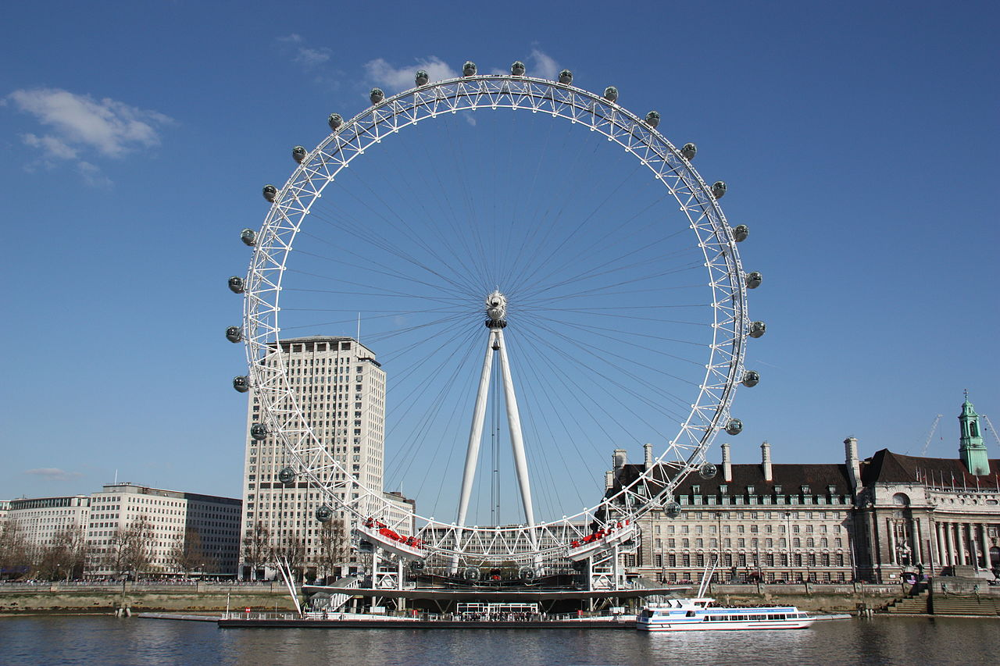

London Eye
The London Eye was formally opened by then Prime Minister
Tony Blair on 31 December 1999,
but did not open to the paying public until 9 March 2000
because of a capsule clutch problem.
The wheel's 32 sealed and air-conditioned ovoidal passenger capsules
are attached to the external circumference of the wheel and rotated by electric motors.
Each of the 10-tonne capsules represents one of the London Boroughs, and holds up to 25 people,
who are free to walk around inside the capsule,
though seating is provided.
The wheel rotates at 26 cm per secondso that one revolution takes about 30 minutes.